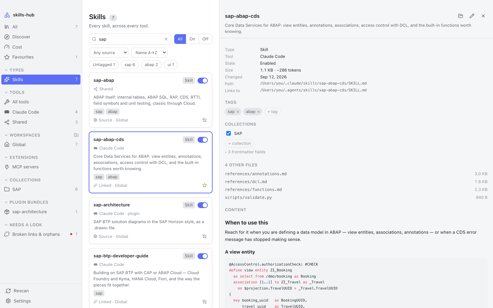
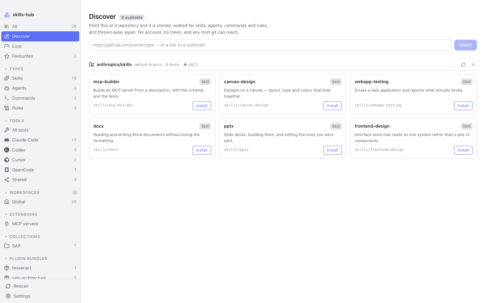
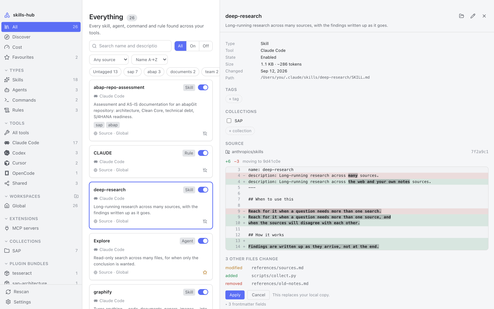
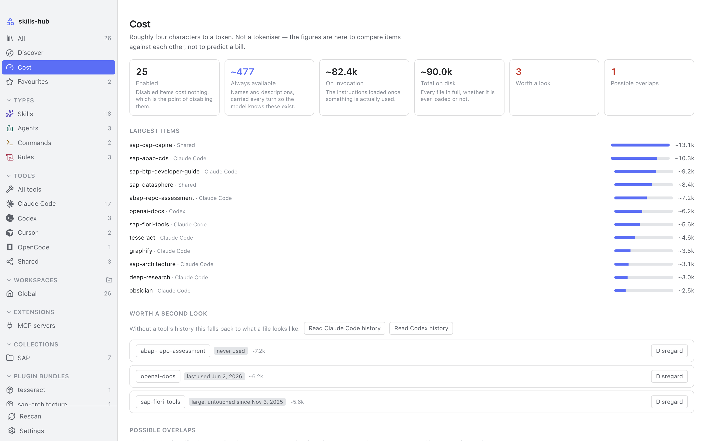
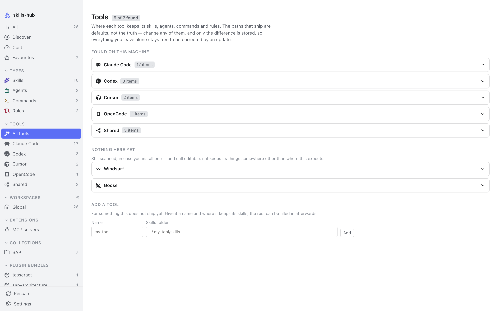

Your skills, agents, commands and rules are scattered across a dozen folders, one convention per tool. This puts them in one place — and works on the real folders, so everything it does is a real change.
No account, no telemetry, nothing to sign in to.

On disk
A checkbox in a manager that never touches the file a tool reads has not disabled anything. Everything here happens on disk.
Disabling moves the item out of where the tool looks, and back again. A relative symlink is recomputed for its new depth rather than replaced, so a shared skills folder survives the round trip unchanged.
Linking a global skill into a project makes a symlink, never a duplicate. Two copies drift apart the moment one is edited; a link cannot.
One small markdown file per item, in a folder you choose. Inside an Obsidian vault they sync with everything else and stay queryable from Dataview.
A scan that could not read a folder never prunes. A note whose item has gone is kept for a fortnight — and indefinitely if you put anything in it.
Discover
Search the skills.sh registry by name, or point it at any repository git can reach. No account and no token either way — and nothing is overwritten before you have seen what would change.


Cost
What a tool carries every turn — a name and a description, so the model knows the item exists — separated from what it loads once the item is actually used. Only the first is a standing cost.

Tools
It writes where they already read. Every path below is a default, editable and checked against your machine as you type — only the difference from the default is stored, so a path you leave alone stays free to be corrected by an update.
~/.claude/skills~/.cursor/skills~/.codex/skills~/.config/opencode/skills~/.gemini/config/skills~/.gemini/commands~/.copilot/skills~/Documents/Cline/Rules~/.trae/skills~/.codeium/windsurf/skills~/.config/goose/skills~/.hermes/skills~/.pi/agent/skills~/.roo/rules.continue/prompts~/.agents/skills
Architecture
Three layers, dependencies pointing inwards only. The domain crate never imports the
UI framework — enforced by cargo deny, not by discipline — and
$HOME is injected rather than read, which is what makes the scanner
testable against temporary directories instead of only the machine it runs on.
| Layer | Where | Knows about |
|---|---|---|
| UI | src/ | the generated bindings, and nothing else |
| Adapter | src-tauri/ | Tauri and the domain |
| Domain | crates/core/ | neither of the above |
Get it
There is no installer yet. Building it yourself needs Rust, Node and pnpm, and produces
a .app and a .dmg — or the equivalent for your platform.
git clone https://github.com/\
nimble-123/skills-hub
pnpm install pnpm tauri build
On first launch it asks where to keep its notes. Your skills themselves are never moved or copied — only those notes live there.
xattr -dr com.apple.quarantine skills-hub.app.
Control-clicking the app and choosing Open no longer works; macOS 15 removed that
bypass.